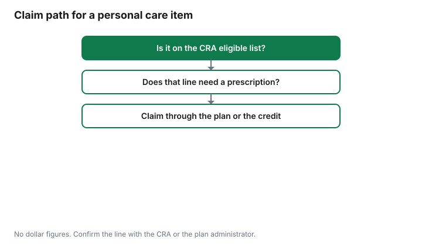

Personal Care · Canada
Which Personal Care Items Can You Claim as Medical Expenses or Through an HSA in Canada?
A US badge that says a toiletry is “HSA eligible” is a United States plan label. It is not the Canada Revenue Agency’s medical expense list. This page puts personal care items next to the words in guide RC4065 and in Income Tax Folio S1-F1-C1, both checked 29 Sep 2026. It does not calculate your credit, choose which spouse should claim, or tell you what your plan will reimburse. The threshold and the 12-month window are on the medical expense guide. Employer accounts are on the employer HSA guide. There is no affiliate offer here. This is education, not tax advice. Confirm with the CRA or your plan administrator.
Key takeaways
- RC4065 lists incontinence products when they are needed because of illness, injury, or affliction, and it lists two groups: catheter-type products, and diapers or disposable briefs.
- Folio paragraph 1.87 limits “other products” to that class. Generic bed clothing, caregiver gloves, body ointments, and baby wipes are not in that paragraph.
- A wig can qualify when hair loss is abnormal because of a disease, accident, or medical treatment, and RC4065 says a prescription is needed. Hair replacement procedures are on the non-eligible cosmetic list.
- Absence is not a statute that says “never,” because the CRA says its public list is not exhaustive.
- A Canadian health spending account follows the booklet and the CRA medical rules the plan uses. It is not a US health savings account.
The CRA test: medical expense vs personal expense
The medical expense tax credit is a list with conditions, not a vibe about health. Guide RC4065 for 2025, the HTML edition checked 29 Sep 2026, is the CRA’s common list.
The folio is the longer technical chapter. If a personal care item is on the list and you meet the condition printed beside it, it is in the category the CRA describes as eligible. If it is an ordinary cosmetic or toiletry with no such condition, it is a personal expense for this credit. The lines 33099 and 33199 page, which the folio and RC4065 point you toward, says the published list is not exhaustive. Do not invent a category because a receipt feels medical. Do not ignore a category that is printed.
Who claims, and how the 3 percent threshold works in a year, is not re-derived here. Use the medical expense guide and the spouse guide. A paramedical visit has its own receipt rules on the paramedical guide. A bottle of shampoo is not that visit.
Eligible: incontinence products needed because of a condition, wigs with a prescription
RC4065 lists “Catheters, catheter trays, tubing, or other products needed for incontinence caused by illness, injury, or affliction.” It also lists “Diapers or disposable briefs for a person who is incontinent because of an illness, injury or affliction.” Folio S1-F1-C1, paragraph 1.87, says the cost of diapers, disposable briefs, catheters, catheter trays, tubing, or other products required by a patient because of incontinence caused by illness, injury or affliction are eligible medical expenses under paragraph 118.2(2)(i.1) of the Income Tax Act. It says the reference to other products is restricted to the same class as diapers, disposable briefs, catheters, catheter trays, and tubing.
RC4065 lists wigs as “the amount paid for a person who has suffered abnormal hair loss because of a disease, accident, or medical treatment,” and it says a prescription is needed. Folio paragraph 1.122 says the devices in section 5700 of the Income Tax Regulations include “a wig that is made to order for a patient who has suffered abnormal hair loss owing to disease, medical treatment or accident,” citing paragraph 5700(a). Read both sentences together when you talk to the CRA: the guide’s prescription line and the folio’s made-to-order line. This page cannot merge them into a shorter rule than the one the CRA printed.
Not eligible: cosmetics, most sunscreen, generic wipes and ointments
Folio paragraph 1.87 says that, to the extent items such as bed clothing, disposable gloves for caregivers, body ointments, and baby wipes are generic and not designed for use by incontinent persons, the expenses would not be considered medical expenses under paragraph 118.2(2)(i.1). Paragraph 1.88 says the cost of medical ointments to treat or prevent infection may be eligible under subparagraph 118.2(2)(n)(i) if all the requirements of that provision are met. RC4065, in the prescribed-drugs section, says you cannot claim over-the-counter medications, vitamins, or supplements, even if prescribed by a medical practitioner, except vitamin B12. A generic wipe or a general ointment does not become eligible because it sits in a bathroom.
RC4065 says expenses solely for cosmetic procedures are generally not eligible. In the list of common expenses you cannot claim, it includes cosmetic surgery for purely cosmetic procedures, including related services and travel, and it names liposuction, hair replacement procedures, filler injections for removing wrinkles, and teeth whitening. It also says a cosmetic surgery expense may qualify if it is necessary for medical or reconstructive purposes, such as surgery to address a deformity related to a congenital abnormality, a personal injury from an accident or trauma, or a disfiguring disease. Hair replacement procedures on that not-eligible list are not the wig sentence. Do not use one to answer the other.
The heading on this section says “most sunscreen” because the public list is not exhaustive and this guide will not upgrade silence into a statute. What can be said is that a sunscreen bought as a daily cosmetic does not meet the incontinence test or the wig test. Menstrual products are a GST question on the menstrual cost guide, not an automatic medical expense.
| Item | On those pages | Condition | Where it is printed |
|---|---|---|---|
| Catheters, trays, tubing, or other products of that class | Listed | Needed because of incontinence caused by illness, injury, or affliction | RC4065, and folio 1.87, paragraph 118.2(2)(i.1) |
| Diapers or disposable briefs | Listed | The person is incontinent because of an illness, injury, or affliction | RC4065, and folio 1.87 |
| Wig | Listed | Abnormal hair loss from disease, accident, or medical treatment. RC4065: prescription needed. Folio: made to order, regulation 5700(a) | RC4065 and folio 1.122 |
| Generic wipes, generic ointments, bed clothing, caregiver gloves | Not under the incontinence paragraph when they are generic | Folio 1.87. A medical ointment can be a different drug rule under folio 1.88 if that rule is met | Folio 1.87 and 1.88 |
| Hair replacement procedures, liposuction, filler injections, teeth whitening | Not eligible when purely cosmetic | Reconstructive cases are the exception RC4065 prints | RC4065, expenses you cannot claim |
| Ordinary sunscreen, skincare, toiletries | Not a listed row in RC4065 | Do not treat silence as a new eligible category | RC4065 list checked 29 Sep 2026 |
Health spending accounts follow the CRA list
In a Canadian workplace, an HSA or HCSA is usually an employer-funded health spending account inside a private health services plan. It is not a US health savings account, and it is not a TFSA.
The booklet can be narrower than the CRA list. It should not be a US shopping badge. RC4065 says premiums you pay to a private health services plan, including medical, dental, and hospital plans, can be claimed as a medical expense as long as 90 percent or more of the premiums paid under the plan are for eligible medical expenses. That sentence is about the premium, not a promise that every toiletry is payable from the account.
Ask the administrator, in writing if you can, whether a specific receipt is eligible under your contract. A self-employed arrangement has its own setup. Use the self-employed HSA guide for that structure, and the employer guide for a workplace credit that expires. This page does not restate plan-year dates.
Receipts and records
Keep the receipt that shows who the patient is, what was bought, the date, and the amount you paid. A card slip that says “pharmacy” is not a description of incontinence products or of a wig.
For a wig, keep the prescription RC4065 says is needed, and keep whatever shows the hair loss condition the folio describes. For incontinence products, the condition is part of the CRA sentence. This guide does not cite a form that replaces your notice of assessment.
If a plan reimburses you, you generally cannot claim the same dollars again as a medical expense. The employer HSA guide says that more plainly for workplace accounts. Match the reimbursement to the receipt before you put the receipt on a return.
Common myths from US 'HSA/FSA eligible' lists
US sites print “HSA eligible” or “FSA eligible” on sunscreen, pads, and ordinary toiletries. Those programs are not the Canadian credit and not a Canadian health spending account. A badge does not move an item onto RC4065. The second table is the myth next to the Canadian page that answers it.
| What the badge suggests | What the Canadian pages support |
|---|---|
| Any sunscreen is a medical expense | Sunscreen is not an eligible row in the RC4065 list |
| Ordinary toiletries qualify because a site says FSA | Toiletries were not an eligible row. Points and badges are not the folio |
| All wipes and ointments for incontinence qualify | Folio 1.87 excludes generic wipes and ointments that are not of the listed class |
| A hair transplant and a wig are the same claim | Hair replacement procedures are on the non-eligible cosmetic list. A wig has its own prescription and hair-loss conditions |
| A Canadian HSA is the US account you see on a bottle | A workplace HSA follows the booklet and the CRA medical rules. Read the employer guide |

Sources & date stamps
- CRA, guide RC4065, Medical Expenses 2025, HTML edition checked 29 Sep 2026. Incontinence products, diapers, wigs with a prescription, cosmetic surgery that is not eligible, over-the-counter products except vitamin B12, and the 90 percent private health services plan premium test.
- CRA, Income Tax Folio S1-F1-C1, Medical Expense Tax Credit, checked 29 Sep 2026. Paragraphs 1.87, 1.88, and 1.122, including regulation paragraph 5700(a).
- The lines 33099 and 33199 page is the list the CRA points to. This guide relies on RC4065 and the folio for the sentences quoted. It does not restate the credit threshold.
- Badge language is described as a myth, not as US law.
Frequently asked questions
Can I claim incontinence products as a medical expense?
Guide RC4065, checked 29 Sep 2026, lists catheters, catheter trays, tubing, or other products needed for incontinence caused by illness, injury, or affliction, and it also lists diapers or disposable briefs for a person who is incontinent because of an illness, injury, or affliction. Folio S1-F1-C1, paragraph 1.87, says other products are limited to that same class. This is education, not a ruling on your receipt, so confirm with the CRA.
Is a wig a medical expense in Canada?
RC4065 lists wigs as the amount paid for a person who has suffered abnormal hair loss because of a disease, accident, or medical treatment, and it says a prescription is needed. Folio paragraph 1.122 describes a wig made to order for a patient who has suffered abnormal hair loss owing to disease, medical treatment, or accident, under Income Tax Regulations paragraph 5700(a). Hair replacement procedures are on RC4065’s list of non-eligible cosmetic surgery. A wig line and a surgery line are not the same sentence.
Are sunscreen and skincare claimable?
RC4065 does say you cannot claim over-the-counter medications, vitamins, or supplements, even if prescribed, except vitamin B12. Do not claim a cosmetic because a receipt uses the word medical. Confirm with the CRA.
Does my health spending account cover toiletries?
Only if your booklet says so and the expense meets the CRA test the plan is using. A Canadian employer health spending account is not a US health savings account, and RC4065 says premiums paid to a private health services plan can be a medical expense when 90 percent or more of the premiums are for eligible medical expenses. Whether a shampoo receipt is payable is the administrator’s question. Read the booklet, and see the employer HSA guide.
Why don't US 'HSA-eligible' lists apply in Canada?
Those badges are United States plan labels, not guide RC4065 and not folio S1-F1-C1. A bottle can be marketed as eligible for a US account and still be a personal expense in Canada, including ordinary sunscreen and many toiletries. Use the CRA list and your Canadian plan booklet. The medical expense guide covers the credit, and this page does not restate US law.
Researched and drafted with AI assistance and fact-checked against official Canadian sources. How we create content.